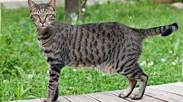

Fauna
- Ardillas
- Gatos
- Palomas
- Iguanas
Las Ardillas que vemos son de las más comunes, a veces se le ven en familia, pero la mayoria son solitarias y recientemente se avistaron a una familia de ardillas vagando entre los cables, y muchas veces se le ven saqueando comida o pedazos de comida olvidada de las mesas esparcidas por todo Bachiller.
Aunque no son muy vistos se han podido observar a gatos rondando por el colegio y en ocasiones dejandose acariciar.
Estas estan presenten en cualquier lugar, asi que no es de extrañar que tambien esten en nuestro colegio, hacen lo que cualquier ave haria, tirar sus derechos en donde sea y robarse las migajas de donde sea.
Esta no estan presentes en cualuiqer lugar pero el colegio de Bachilleres tiene muchas de estas, tanto hembras como machos, estas se distinguen facilmente y al ser ya la epoca de apareamiento están más activas.